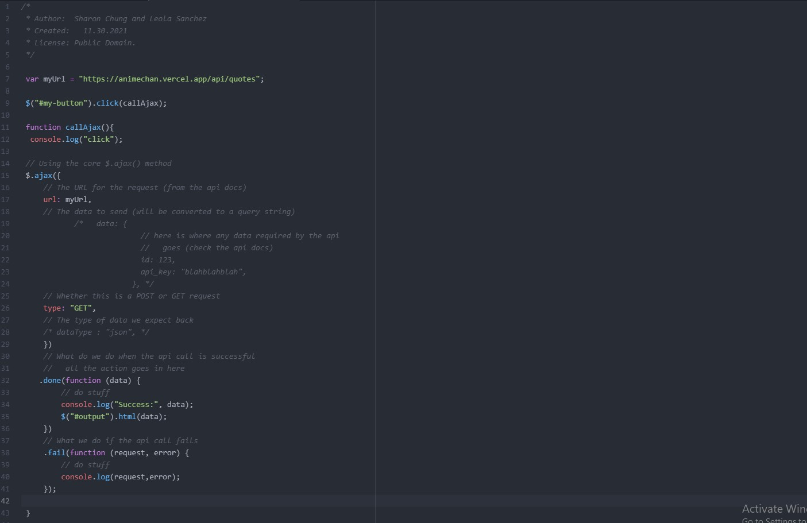
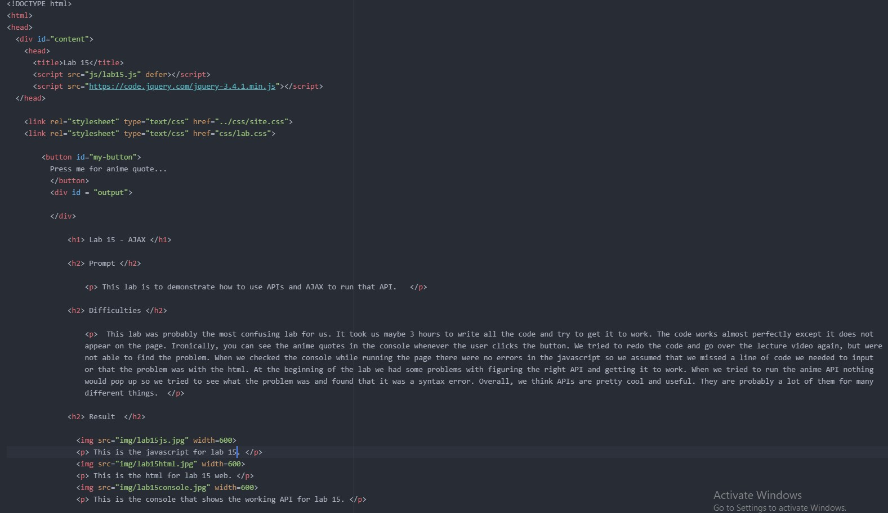
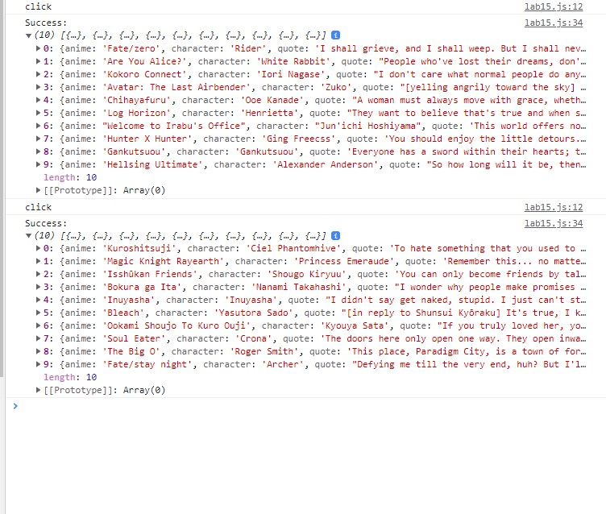

Lab 15 - AJAX
Prompt
This lab is to demonstrate how to use APIs and AJAX to run that API.
Difficulties
This lab was probably the most confusing lab for us. It took us maybe 3 hours to write all the code and try to get it to work. The code works almost perfectly except it does not appear on the page. Ironically, you can see the anime quotes in the console whenever the user clicks the button. We tried to redo the code and go over the lecture video again, but were not able to find the problem. When we checked the console while running the page there were no errors in the javascript so we assumed that we missed a line of code we needed to input or that the problem was with the html. At the beginning of the lab we had some problems with figuring the right API and getting it to work. When we tried to run the anime API nothing would pop up so we tried to see what the problem was and found that it was a syntax error. Overall, we think APIs are pretty cool and useful. There are probably a lot of them for many different things.
Result
This is the javascript for lab 15.
This is the html for lab 15 web.
This is the console that shows the working API for lab 15.